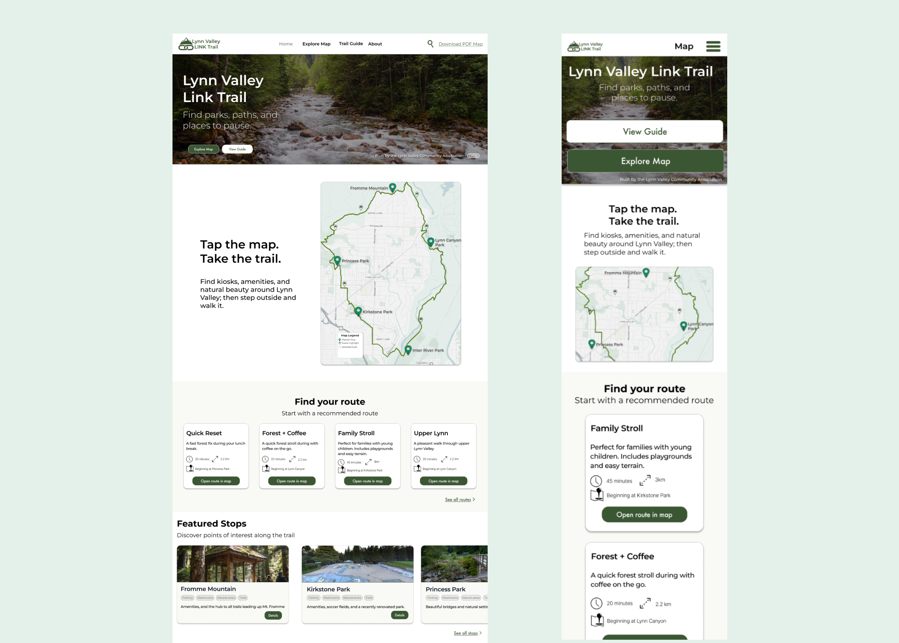
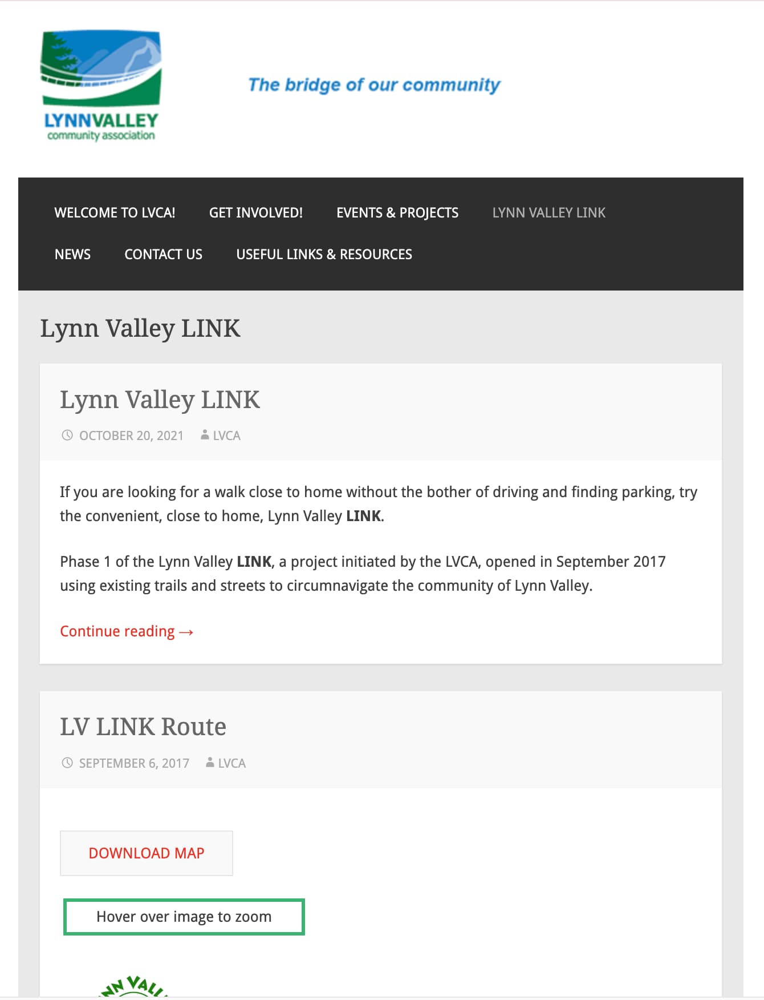
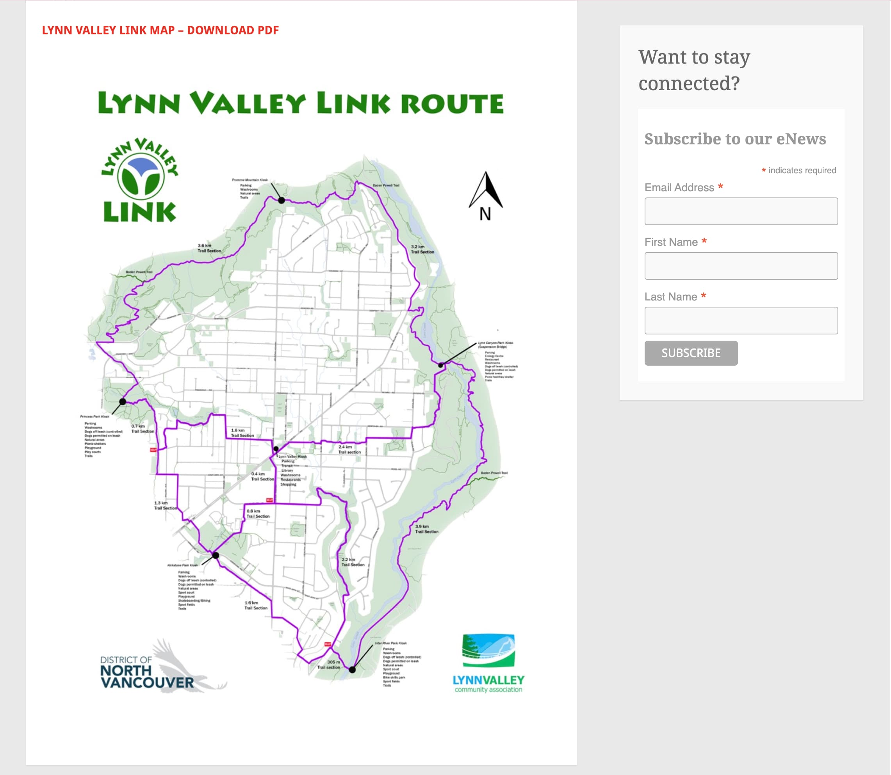
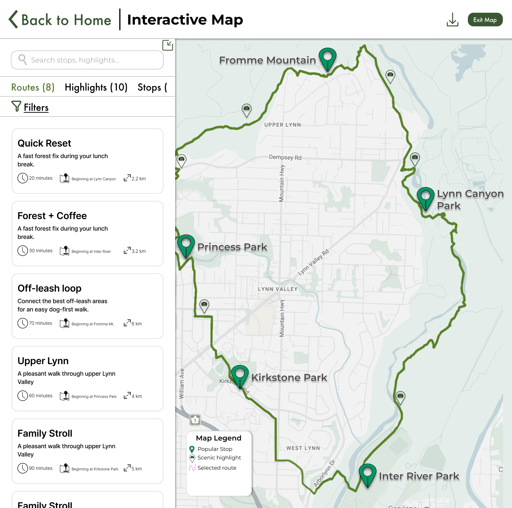
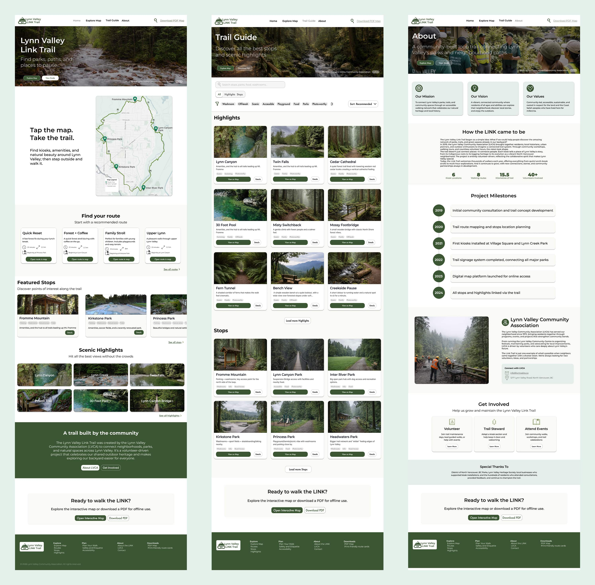

Weak visual hierarchy
Dense layouts and long-form content made it harder to quickly understand where to go or what to do next.
Responsive Web Design / UX/UI
A responsive redesign that transforms a text-heavy local trail website into a clearer, more inviting experience for discovering walks, route highlights, and trail-side stops.
This project reimagines Lynn Valley Link as a calmer, more structured digital experience that helps users choose a route quickly, understand what they will find along the way, and feel encouraged to explore in person.

The original experience
The original site communicated useful information, but its blog-like structure made route discovery feel buried and harder to scan. The redesign focused on helping users make quicker decisions and feel more motivated to explore Lynn Valley both digitally and physically.

Dense layouts and long-form content made it harder to quickly understand where to go or what to do next.
The original experience did not support fast comparison between options, which reduced its usefulness for casual planners.
The presentation felt more archival than inviting, which worked against the goal of motivating exploration.
Transformation


Final responsive screens



Process
Early hand-drawn wireframes helped define the core page structure, content hierarchy, and the relationship between route discovery, supporting information, and responsive layout decisions.
From there, the concept evolved into higher-fidelity desktop and mobile screens with a stronger visual rhythm, clearer hierarchy, and a more inviting tone.


Visual system
A consistent hierarchy was established across desktop and mobile to support scanning, page rhythm, and readability.
The interface used a calm, nature-forward palette to align with the trail context while maintaining clarity.
Colour combinations were evaluated to improve legibility and create a more accessible browsing experience.
Key design decisions
The homepage prioritized route choice and highlights rather than long explanation, helping users decide where to start faster.
Route options were treated as the primary content pattern so users could compare choices at a glance.
The information hierarchy was designed to translate cleanly from desktop to mobile without losing usability.
Outcome

The final concept transforms Lynn Valley Link into a more navigable and motivating experience, helping users choose a route, understand what they will find, and feel encouraged to explore in person.